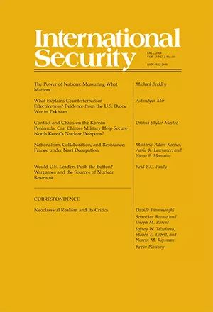
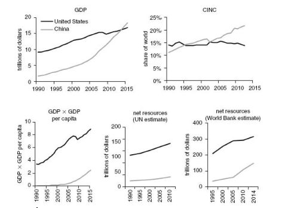

收录于合集

简 介
【原题】 The Power of Nations: Measuring What Matters
【作者】 Michael Beckley ，是塔夫茨大学的政治学助理教授和哈佛大学肯尼迪政府学院的贝尔弗科学与国际事务中心的国际安全项目助理。本文的一部分取自他的著作《无与伦比的:为什么美国仍将是世界上唯一的超级大国》(纽约州伊萨卡:康奈尔大学出版社，2018年)的第二章。
【来源 】 International Security，Volume 43 | Issue 2 | Fall 2018
【期刊介绍】

《国际安全》（International Security）是国际和国家安全领域的同行评议学术期刊。它成立于1976年，由哈佛大学贝尔弗科学与国际事务中心(Belfer Center for Science and International Affairs at Harvard University)编辑，麻省理工学院出版社(MIT Press)每年出版四次。2014年的影响系数为4.455，在“国际关系”这一类别的85家期刊中排名第一。
IS杂志发布关于当代各种安全问题的清醒、证据确凿的文章。其文章既讨论战争与和平等传统安全问题，也讨论包括日益重要的环境问题、人口问题、人道主义问题和兴起的全球恐怖网络问题等非传统安全问题。四十多年来，该杂志定义了美国国家安全政策的焦点，并为国际安全事务的研究设置议程。
【 期刊网址 】
**** https://www.mitpressjournals.org/loi/isec
【编译】 杨艺华
【校对】 曲雅倩，陈丽
核心观点
权力是世界政治中最重要的变量，但学者和政策分析师系统性地错误测量了权力。大多数研究使用广泛的经济和军事资源的指标（如 GDP和军费开支）来评估国家的权力，这些指标在没有扣除支付给警察、保护人民和为人民服务的费用的情况下计算一国的财富和军事资产。因此，这些指标夸大了中国和印度等贫穷的人口大国的财富和军事力量。相比这些总值指标，用减去成本的净值指标来测量权力是一种更为可靠的方法，能更为准确地预测过去的200年里大国间的战争和争端的结果。此外，它提高了过去发表在著名期刊中的大多数研究的样本内拟合优度。将这个改进的框架应用到当前的权力对比情况之后，我们就会发现美国对于其他国家的经济和军事领先远远超出通常的假定，以后也将会继续如此。
一、测量权力：资源VS结果
测量权力的方法主要有两种。最常见的方法是通过计算每个国家的财富和军事资产来测量权力，这也是我在这篇文章中重点讨论的方法。这种“权力即资源”方法的逻辑很简单。财富使一个国家能够通过援助、贷款、投资和贿赂来增加影响，也使其能够通过资助全球宣传活动、建立庞大的摩天大楼和举办国际展览与体育活动等方式来培育软实力(即一个国家吸引和拉拢他人的能力）。另一方面，军事资源(军队和武器等)使一个国家能够摧毁敌人和吸引盟友，也使其能通过暴力威胁或提供保护的方式从较弱的国家获取让步和回扣。
然而，有些学者拒绝“权力即资源”的方法，并用结果来测量权力。在他们看来，权力首先并最重要的是赢的能力，是一个国家在争端中胜利、为国际事务设定议程、或改变其他国家偏好的能力。因此，测量权力应使用“权力即结果”这一方法，即观察战争或外交谈判等国际事件并确定参与者能够在多大程度上根据自己的利益去影响结果。这一方法是有优势的，其识别了在某一具体事件中谁得到了什么、在什么时候得到以及如何得到，这有助于解释那些资源更少的国家获胜的案例。
但是，“权力即结果”方法有三个弱点，这限制了其对于国际关系的实证研究的适用性。首先，学者们经常想要测量大量事件中权力的对比情况，但这一方法本身就是针对具体事件的。因为要评估结果就需要知道参与国家的偏好，但由于国家的偏好是不固定的，所以学者们很难知道一个长时期内成百上千个事件中国家的偏好。其次，这一方法仅适用于分析过去的事件，但学者们往往想要测量现在的权力对比情况并预测未来。最后，这一方法得出的结论有时是无意义的，因为权力之外的毅力、运气和智慧也可能影响结果。
由于上述原因，我最终采用了“权力即资源”的方法。然而，我使用的实际上是混合方法: 我用资源衡量权力，但同时使用关于结果的数据来评估不同资源指标的相对有效性。具体地说，我评估哪些资源指标能最为准确地跟踪大国的兴衰并预测过去的国际争端和战争的赢家。这种双重方法兼具了两种权力测量方法的优点，它对权力的测量是基于历史的，所以其能反映历史、用于现在并投射到未来。
二、测量资源：总值VS净值
许多学者和分析者用资源测量权力。但不幸的是，其中大多数人用总值而不是净值测量权力。测量总值的指标系统地夸大了人口大国的权力，因为它们只计算了大量人口的好处却忽视了其成本。大量的人口明显是一个重要的权力资产，但有了大量的人口却不能保证一国成为大国，因为人们既生产又消费资源。
主要有三种削弱国家权力资源的成本，即生产成本、福利成本和安全成本。
生产成本是一个国家产生经济和军事输出所必须输入的资源。在经济领域，生产成本包括消耗的原材料和生产过程中产生的负外部性(如污染)。在军事领域，生产成本是指产生给定水平的力量的资产数量。并且，军事领域的生产成本与技能、技术有函数关系，即拥有熟练技术人员和先进技术的军队将使用更少的资源来完成任务。
福利成本是生存成本，是一国用于防止人民死于街头所支付的费用。它包括了对基本物品的支出，例如食物、医疗保健、社会保障和教育。
安全成本是政府支付警察和保护公民的费用，因为警察和军事单位主要的功能是追逐罪犯、平息叛乱、或者保卫边界免于外国入侵，这就使他们无法把权力投射海外或在国内创造财富。
在人类历史的大部分时间里，这三种成本消耗了国家几乎所有的资源。即使在今天，这三种成本也消耗了世界上大量的军事和经济资产。因此，在使用净值指标分析权力对比情况时，我们必须减去这三种成本。
三、权力的指标
在这一节中，我展示了一些测量经济和军事资源的最常用的指标，这些指标的问题是忽视了生产、福利和安全成本。之后，我将讨论学者如何通过使用净值指标来解决这个问题。
（一）总值指标
在总值指标中，最受欢迎的指标是GDP，其记录了一定时期内一个国家的经济中所生产出的全部最终产品和劳务的价值。GDP从技术上说是一个经济指标，但支持者认为其描述了经济和军事能力，因为国家可以轻松地将经济资源转化为军事能力。尽管GDP被广泛使用，但很少有人知道GDP在使用时没有减去成本。因为GDP就是一定时期内政府、消费者和商家所花的钱的加总，所以只要花了钱就能增加GDP，而不管钱是输出还是成本。
除了GDP，另一个最常用的指标是“战争潜力”，其结合了经济产出总值和军事资源。这种方法的逻辑是权力最终取决于赢得主要战争的能力，这就需要一个强大的军队和支持其的强有力的军事预算和强大的工业。学者们一般也会使用战争潜力来测量国家的权力，并且1000多个研究使用了CCIN这一指标（结合了军事开支、军队、人口、城市人口、钢铁生产和能源消耗等数据）。但是，它也没有减去成本。它没有考虑军队的技能或技术的差异性、支持军队的福利成本的差异性和这些军队是否向国外投射权力或在国内加强秩序，而只是把所有的军事单元都看成一样的。它还将军事开支和其他输入（能源消耗、研发支出等）看作输出，所以一国可以通过制造敌人进而培养攻击敌人的军队来提高它的CCIN分数。
最终，所有总值指标都是一维的，它们只测量了一个国家的资源大小而没有测量一国如何有效地使用资源（即资源的效率）。
（二）净值成本
学者们如何解决上述指标的问题呢？理想的方法是减去成本，然后测量经济和军事资源的净值。然而，这种方法有一个明显的问题，即计算成本需要大量的数据和时间。为了解决这个问题，作者认为人均GDP是一个测量经济和军事效率的可靠指标。进而，将GDP和人均GDP相乘就可以得到一个既考虑规模又考虑效率的指标，而这两方面正构成了净值的两个维度。
四、研究设计
在本文中，作者使用了三种方法来比较在国际政治中总值指标和净值指标哪一个更为重要。首先，作者对两个大国长期的地缘政治竞争进行了案例研究，其中一个大国在资源的总值指标上占有优势，另一个大国在资源的净值指标上占有优势。其次，作者使用了大量的数据集来评估GDP、CINC和GDP×人均GDP这三个指标哪一个能更好地预测国际冲突和战争中的胜者和败者。最后，作者分析了当权力作为控制变量时各个指标测量的有效性。为了达到目的，作者复制了二十个相关的研究和其中的总值、净值指标，并观察每一个指标是如何影响模型的样本内拟合优度。
五、结论
通过上面的研究，作者证明了以下结果：在追踪大国的兴衰、预测国际冲突与战争的成败以及充当国际关系定量研究的控制变量这三个方面，他所提出的GDP×人均GDP比总值指标更有效。这一结果有两大重要的意义。
首先，作者认为过去大量的国际关系文献建立在错误的权力概念之上（即用总值指标测量权力），因此现存的文献可能需要用GDP×人均GDP这一指标重新评估。其中，关于战争和军事冲突结果的文献以及权力转移理论是两个重要的例子。
其次，作者认为这一结果挑战了对于权力对比情况趋势的传统观点。作者所说的传统观点是指，20世纪90年代以来尤其是2008年金融危机之后，美国的经济和军事实力相比其他国家正在衰落并且世界将变得多极化。传统观点的证据是，中国不断增长的GDP和军事开支。但作者认为，中国并不像总值指标显示的那样强大，原因有以下几个。
首先，中国在债务、资源消耗、污染、无用的基础设施与工业产能浪费、科学造假、国内安全支出、边界争端、民众的医疗需求、老年病人和养老金领取者等方面都居世界前列；其次，在产生一个给定水平的经济产出时，中国的输入是美国的七倍；最后，中国周围有19个国家，其中大多数国家敌视中国或者其国内政治不稳定，或两者兼而有之。
在思考这些成本之后，作者对中美两国的总值指标和净值指标进行了测量，如下图所示。

*点击左下角“ 阅读原文 ”获取原文pdf版
更多阅读

国政学人 （ID：guozhengxueren)
为方便学人及时阅读高质量文章
别忘把国政学人设置 星标 哦~